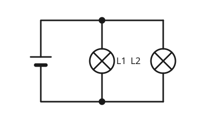

Die Parallelschaltung
Mit einem KI-Tutor lernen
Ein KI-Tutor erklärt dir diese Seite und hilft dir bei den Übungen. Wähl deinen Assistenten:
Mit Claude öffnen Mit ChatGPT öffnen Mit Mistral Vibe öffnen
Du nutzt dein eigenes Konto beim Anbieter. Der Assistent ist kein Angebot von lernapps.net: lernapps liefert nur Inhalte und Übungen. Die Wahl gilt für alle Seiten, nur auf diesem Gerät.
Zwei Lampen nebeneinander
Zu Hause kannst du eine Lampe ausschalten, und die anderen bleiben an. Das funktioniert, weil sie nicht hintereinander, sondern nebeneinander geschaltet sind, in einer Parallelschaltung.
Mehrere Wege für den Strom
- Parallelschaltung
In einer Parallelschaltung sind die Bauteile nebeneinander geschaltet. Der Strom hat mehrere Wege, auf jedem Weg liegt ein Bauteil.

Der Weg teilt sich an einer Verzweigung auf und kommt hinter den Lampen wieder zusammen.
Quelle: eigene Zeichnung. Lizenz: CC-BY-4.0.Jede Lampe liegt auf einem eigenen Weg, einem Zweig. Jeder Zweig bildet mit der Batterie einen eigenen geschlossenen Stromkreis. Fällt eine Lampe aus oder wird ein Zweig unterbrochen, fließt der Strom weiter durch die anderen Zweige, und deren Lampen leuchten weiter.
Ein Zweig fällt aus
L1 wird herausgeschraubt

Im Zweig von L1 fehlt die Lampe. L2 ist weiter an die Batterie angeschlossen.
Quelle: eigene Zeichnung. Lizenz: CC-BY-4.0.Du schraubst L1 heraus. Der Zweig von L1 ist offen. Der Zweig von L2 ist aber weiter geschlossen, also fließt dort Strom, und L2 leuchtet weiter.
Übung
Übung
Lösung
Ja, L2 hat einen eigenen geschlossenen Stromweg zur Batterie. richtige Antwort
Jeder Zweig ist ein eigener Stromkreis. Der offene Zweig von L1 stört ihn nicht.
Nein, wenn eine Lampe fehlt, geht auch die andere aus.
Das gilt für die Reihenschaltung. In der Parallelschaltung hat jede Lampe ihren eigenen Weg.
Nein, weil die Batterie dann keinen Strom mehr liefert.
Die Batterie liefert weiter Strom, nur durch den anderen Zweig.
In der Parallelschaltung hat jede Lampe ihren eigenen Stromweg. Fällt eine aus, leuchten die anderen weiter.
Mehr dazu:
Übung
Lösung
Richtige Antwort: Die Aussage stimmt nicht.
Das passiert in der Reihenschaltung. In der Parallelschaltung leuchten die anderen Lampen weiter.
Mehr dazu:
Übung
Lösung
Damit jede Lampe einzeln an- und ausgehen kann und bei einem Defekt die anderen weiterleuchten. richtige Antwort
Jede Lampe hat ihren eigenen Zweig.
Damit alle Lampen gleichzeitig angehen.
Das wäre in einer Reihenschaltung mit einem Schalter der Fall.
Damit weniger Strom fließt.
Parallel angeschlossene Lampen brauchen insgesamt mehr Strom, nicht weniger.
Parallel geschaltete Lampen arbeiten unabhängig voneinander.
Mehr dazu:
Übung
Lösung
Der Strom hat mehrere Wege. richtige Antwort
Auf jedem Zweig liegt ein Bauteil.
Jeder Zweig bildet mit der Batterie einen eigenen Stromkreis. richtige Antwort
Deshalb stört ein offener Zweig die anderen nicht.
Die Bauteile liegen hintereinander.
Das beschreibt die Reihenschaltung.
In der Parallelschaltung sind die Bauteile nebeneinander geschaltet, jedes auf einem eigenen Zweig.
Mehr dazu: